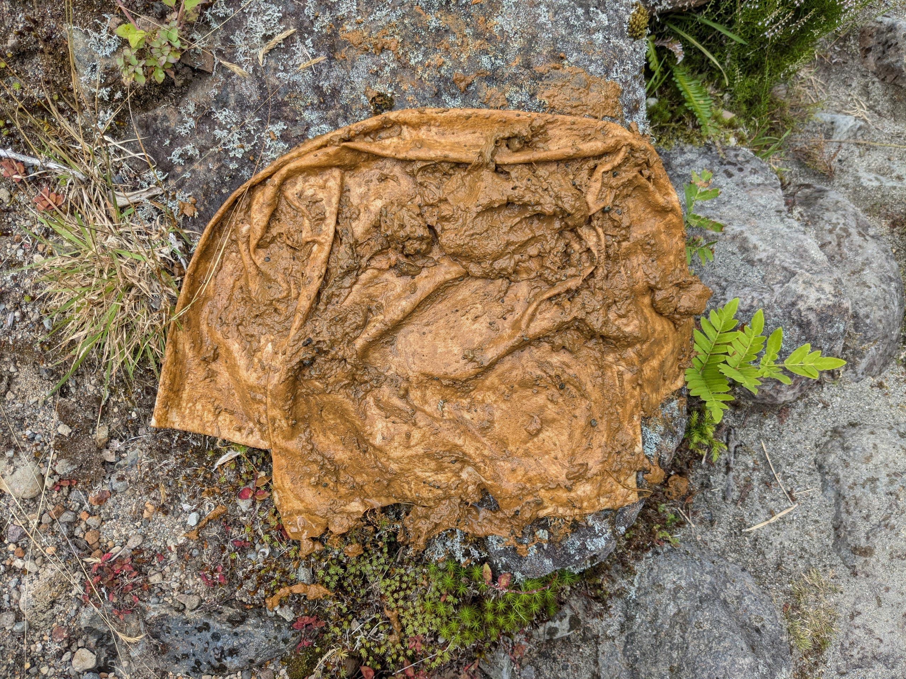
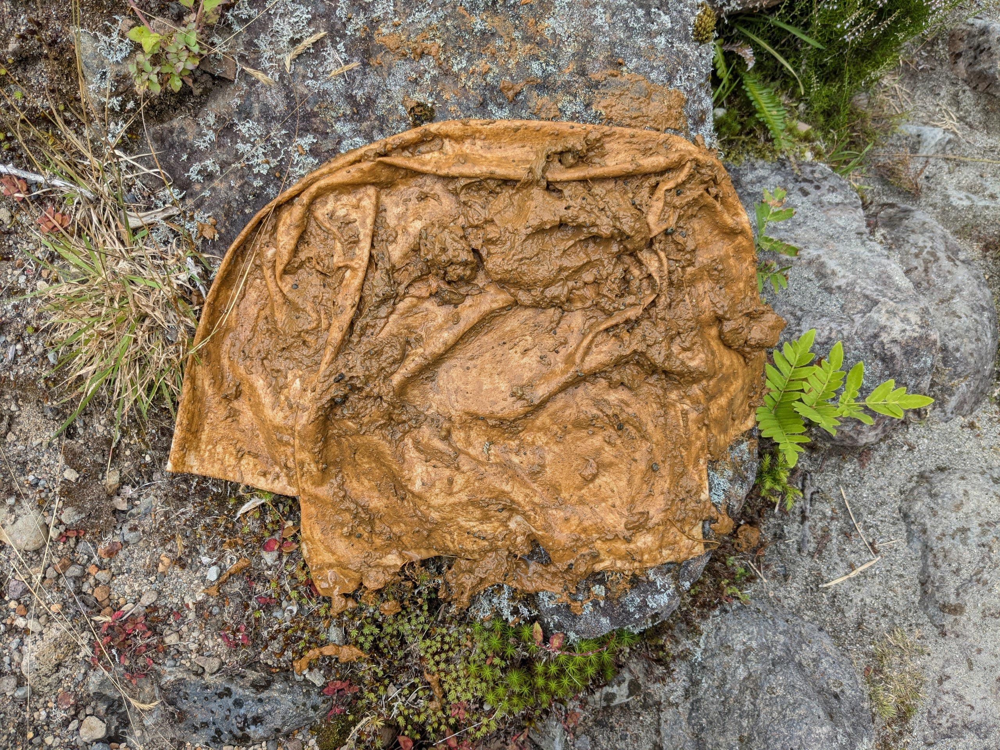

This object is my sibling, made for my head from cotton. It is a hat which covers the face. I’ve soaked it with means of having some visualization of an environment entering a body. I’ve found this way by putting aside my own desire to be this touca[1], out of convenience. But there is the fear of copying, even though I would only do Ana Mendieta a continuation of her action, if I enter this stream it would take me too far without taking the slow steps you see in this document. Slow steps so you notice how one becomes two, which really just means that two become one. (it is both at once). And this integration of movement, I see slowed down by dense atmospheres. As are the ones solidified by humidity. Humidity which makes the cold colder and the warm insufferable, it is tension you cut with the knife, without any discomfort. This is tension that secures you, hugs you so surely sometimes it enters you, you breath slow. You smell it enter you. What goes through us does so through walls. And you do smell it enter the wall you touch and feel wet. And clean your fingers on your already damp shirt. Your clothes merge with you, and you do so with the walls.